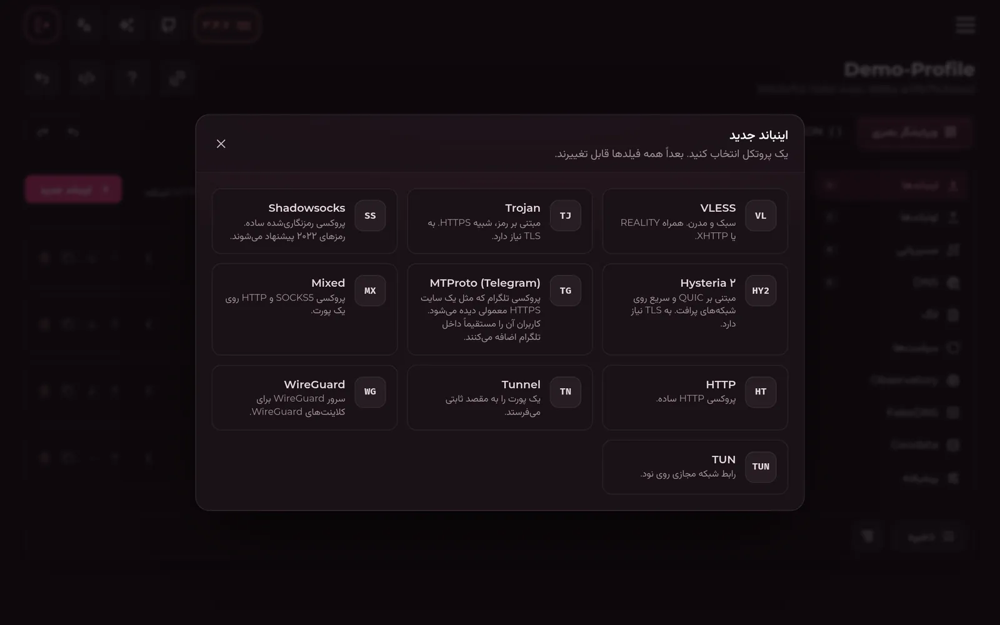
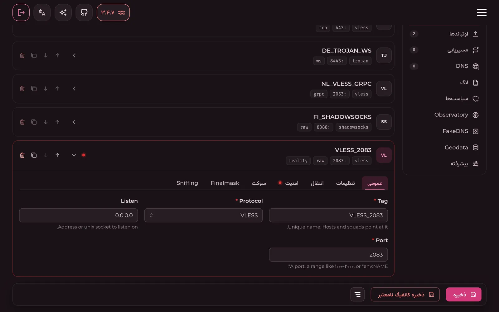
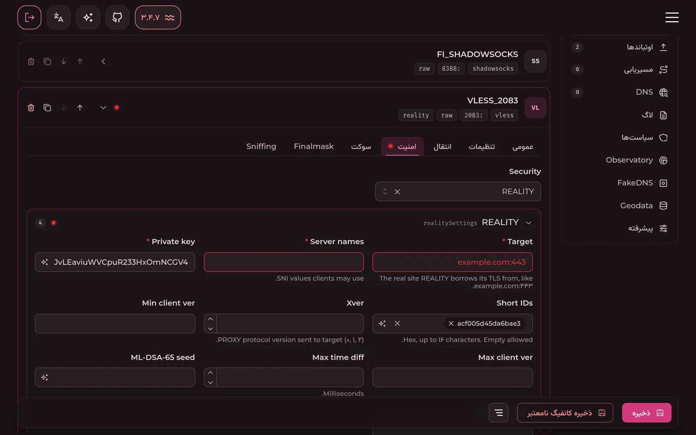
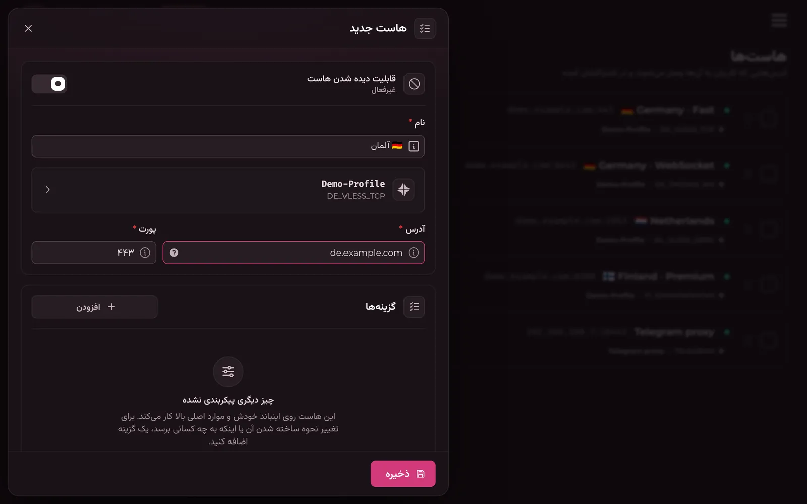
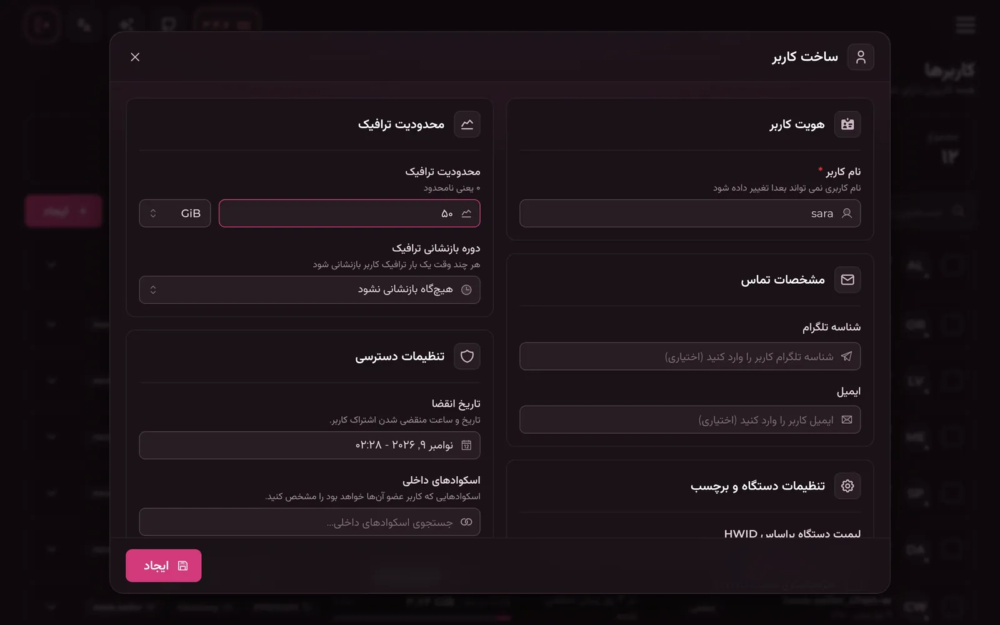
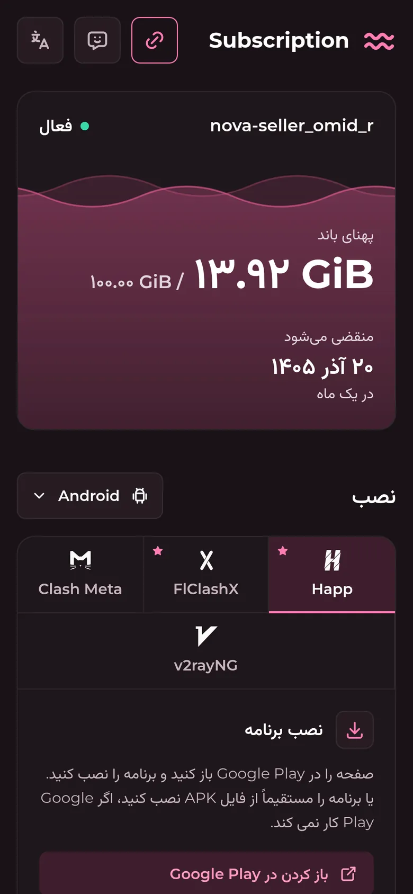

نصب Umiji
یک دستور همهچیز را نصب میکند. اگر Docker نباشد نصبش میکند، چند سؤال میپرسد که هر کدام جواب آماده دارند، و اگر جایی خطا پیش بیاید، میگوید چطور درستش کنید.
چه چیزهایی لازم دارید
- یک سرور لینوکس با دسترسی root؛ سادهترین انتخاب Ubuntu یا Debian است.
- یک دامنه از خودتان، مثل
example.com. پنل و صفحهی اشتراک هر کدام یک نام زیر آن میگیرند.
Umiji سه بخش دارد. حداقل سختافزار هر کدام:
| بخش | حافظه | پردازنده | دیسک |
|---|---|---|---|
| پنل، جایی که همهچیز را مدیریت میکنید | 2 گیگابایت | 1 هسته | 10 گیگابایت |
| نود، که ترافیک کاربرانتان را میبرد | 1 گیگابایت | 1 هسته | 5 گیگابایت |
| صفحهی اشتراک، که کاربرانتان باز میکنند | 512 مگابایت | 1 هسته | 5 گیگابایت |
| هر سه با هم | 2 گیگابایت | 2 هسته | 20 گیگابایت |
میتوانید هر سه را روی یک سرور اجرا کنید، یا به هر بخش سرور جدایی بدهید. اسکریپت نصب میپرسد هر سرور چه چیزی را اجرا کند، پس بخشهای دیگر را بعداً هم میتوانید اضافه کنید، همینجا یا جای دیگر.
دامنه را به سرور وصل کنید
دو رکورد A بسازید، panel و sub، هر دو با IP سرورتان
بهعنوان مقدار. این کار را پیش از نصب انجام دهید، چون HTTPS به آنها نیاز دارد.
اینجا Namecheap را میبینید. شرکتهای دیگر هم همین فیلدها را در بخش DNS دارند.
- Domain List را باز کنید، کنار دامنهتان روی Manage بزنید و بعد Advanced DNS را باز کنید.
- روی Add New Record بزنید و A Record را انتخاب کنید. در Host بنویسید
panelو IP سرورتان را بهعنوان مقدار بگذارید. با تیک سبز ذخیره کنید. - یکی دیگر هم با
subدر Host و همان IP بسازید.
- در dash.cloudflare.com روی Onboard a domain بزنید، دامنهتان را بنویسید و پلن Free را انتخاب کنید.
- در شرکتی که دامنه را از آن خریدهاید، دو نیمسروری را که Cloudflare میدهد جای نیمسرورهای قبلی بگذارید. صبر کنید تا Cloudflare بگوید Active.
- DNS و بعد Records را باز کنید و یک رکورد
Aبا نامpanelو IP سرورتان بسازید. روی ابر بزنید تا خاکستری شود (DNS only) و بعد ذخیره کنید. subرا هم به همین شکل اضافه کنید.
فعلاً ابرها را خاکستری نگه دارید. ابر نارنجی تنظیمات اضافه لازم دارد.
از کامپیوتر خودتان بررسی کنید. جواب باید IP سرورتان را نشان دهد:
nslookup panel.example.comاجرای اسکریپت نصب
-
بهعنوان root وارد سرور شوید. در ویندوز از PowerShell استفاده کنید.
ssh root@203.0.113.10 -
اسکریپت نصب را اجرا کنید:
bash <(curl -fsSL https://raw.githubusercontent.com/therewasluna/umiji/main/install.sh) - انتخاب کنید این سرور چه چیزی را اجرا کند. Panel و Sub page تیک خوردهاند. اگر میخواهید نود هم همینجا باشد، 3 را بزنید: اسکریپت آن را خودش به پنل اضافه میکند. بعد Enter را بزنید.
- دامنهی پنل را بنویسید. برای بقیهی سؤالها، Enter جواب داخل کروشه را میپذیرد، و سر رمز عبور یک رمز قوی میسازد.
- نام کاربری و رمزی را که در پایان نشان میدهد ذخیره کنید.
What should this server run?
[x] 1 Panel where you manage users, nodes and resellers
[x] 2 Sub page the page your users open from their link
[x] 3 Node carries your users' traffic
Panel domain, e.g. panel.example.com: panel.example.com
…
[5/16] ✓ Panel is running 31s
[6/16] ✓ Admin account admin created 0s
[16/16] ✓ Node added to the panel as Panel server 4sاسکریپت نصب به انگلیسی است. سؤالهایش یعنی:
| سؤال | یعنی |
|---|---|
What should this server run? | این سرور چه چیزی را اجرا کند. با زدن عدد، تیک هر بخش را بزنید یا بردارید. |
Panel domain | دامنهی پنل. |
Sub page domain | دامنهی صفحهی اشتراک. |
How should the panel get HTTPS? | عدد 1 برای Caddy داخلی، عدد 2 برای nginx خودتان. |
How should the store bots get their messages? | رباتهای فروشگاه پیامها را چطور بگیرند. عدد 1 (polling) یعنی پنل خودش از تلگرام میپرسد و همهجا کار میکند. عدد 2 (webhook) یعنی تلگرام پیامها را به پنل میفرستد و دامنهای لازم است که تلگرام به آن برسد؛ Enter دامنهی پنل را برمیدارد. |
Who should serve …? | فقط وقتی دامنهی webhook با دامنهی پنل فرق دارد. عدد 1 یعنی Caddy داخلی گواهیاش را میگیرد، عدد 2 یعنی reverse proxy یا تونل خودتان. |
Admin username | نام کاربری مدیر. |
Admin password | رمز عبور مدیر. موقع نوشتن دیده نمیشود؛ Enter یک رمز قوی میسازد. |
Node port | پورتی که پنل با آن به نود وصل میشود. 2222 را با Enter بپذیرید. |
Start? | شروع شود؟ Enter یعنی بله. |
اگر مرحلهای خطا داد، کاری را که میگوید انجام دهید و umiji را بنویسید: از همانجا ادامه میدهد. گیر کردهاید؟ مشکلات رایج را ببینید.
بعداً: دستور umiji
روی سرور umiji را بنویسید تا منویی باز شود: نصب بخشهای دیگر، بهروزرسانی، بکاپ،
برگرداندن بکاپ، تازه کردن رمز مدیر، جابهجا کردن رباتهای فروشگاه بین polling و webhook یا حذف. بکاپها در /opt/umiji/backups/
ذخیره میشوند. همهچیز را در خود دارند، پس پیش خودتان نگهشان دارید، و هر چند وقت یک بار از سرور
بیرونشان بیاورید. این را روی کامپیوتر خودتان اجرا کنید:
scp root@203.0.113.10:/opt/umiji/backups/umiji-20261116-141537.tar .nginx خودتان، یا CDN
HTTPS داخلی اسکریپت نصب (Caddy) پورتهای 80 و 443 را برای خودش میخواهد. اگر سرور سایتهای دیگری هم دارد، در اسکریپت نصب My own nginx را انتخاب کنید و بعد روی سرور:
-
nginx و certbot را نصب کنید:
اگرapt install -y nginx certbot python3-certbot-nginxufw statusبگویدactive، پورتهای وب را باز کنید. پورتهای 3000، 3001 و 3010 را بسته نگه دارید.ufw allow 'Nginx Full' -
یک فایل تنظیمات تازه باز کنید:
این را با دامنههای خودتان داخلش بچسبانید. بلوکnano /etc/nginx/sites-available/umijiserverصفحهی اشتراک را فقط وقتی نگه دارید که صفحهی اشتراک روی همین سرور اجرا میشود.map $http_upgrade $connection_upgrade { default upgrade; '' close; } # پنل IP بازدیدکننده را از X-Umiji-Real-IP میخواند، پس nginx خودش آن را مینویسد و هرچه بازدیدکننده فرستاده نادیده میگیرد. map $remote_addr $umiji_real_ip { default $remote_addr; # صفحهی اشتراکی که روی سرور دیگری است و از راه https://panel.example.com به پنل وصل میشود، # IP بازدیدکنندههای خودش را میفرستد. با IP همان سرور به آن اعتماد کنید: # 203.0.113.20 $http_x_umiji_real_ip; } # پنل server { listen 80; server_name panel.example.com; # عکسهای پیام همگانی ربات تا 10 مگابایتاند. client_max_body_size 20m; # لینکهای backend-tools یک توکن کوتاهعمر در آدرس دارند. location ^~ /api/backend-tools { access_log off; proxy_pass http://127.0.0.1:3000; proxy_http_version 1.1; proxy_set_header Host $host; proxy_set_header Upgrade $http_upgrade; proxy_set_header Connection $connection_upgrade; proxy_set_header X-Real-IP $remote_addr; proxy_set_header X-Umiji-Real-IP $umiji_real_ip; proxy_set_header X-Forwarded-For $proxy_add_x_forwarded_for; proxy_set_header X-Forwarded-Proto $scheme; } location / { proxy_pass http://127.0.0.1:3000; proxy_http_version 1.1; proxy_set_header Host $host; proxy_set_header Upgrade $http_upgrade; proxy_set_header Connection $connection_upgrade; proxy_set_header X-Real-IP $remote_addr; proxy_set_header X-Umiji-Real-IP $umiji_real_ip; proxy_set_header X-Forwarded-For $proxy_add_x_forwarded_for; proxy_set_header X-Forwarded-Proto $scheme; } } # صفحهی اشتراک، اگر روی همین سرور است server { listen 80; server_name sub.example.com; location / { proxy_pass http://127.0.0.1:3010; proxy_http_version 1.1; proxy_set_header Host $host; proxy_set_header X-Real-IP $remote_addr; proxy_set_header X-Forwarded-For $proxy_add_x_forwarded_for; proxy_set_header X-Forwarded-Proto $scheme; } } -
فایل را فعال کنید:
ln -s /etc/nginx/sites-available/umiji /etc/nginx/sites-enabled/rm -f /etc/nginx/sites-enabled/defaultnginx -t && systemctl reload nginx -
گواهیها را بگیرید. certbot تنظیمات HTTPS را به همین فایل اضافه میکند و گواهیها را خودش
تمدید میکند؛ دستور دوم بررسی میکند که تمدید کار میکند.
certbot --nginx -d panel.example.com -d sub.example.comcertbot renew --dry-run
پنل فقط از راه HTTPS جواب میدهد، پس تا certbot اجرا نشده باز نمیشود. nginx هدر
X-Umiji-Real-IP را همیشه خودش مینویسد، پس کسی نمیتواند IP دروغین به پنل نشان دهد.
پشت CDN، مثلاً ابر نارنجی Cloudflare: حالت SSL/TLS در Cloudflare
را روی Full (strict) بگذارید، بعد رنجهای IP آن CDN را معرفی کنید، وگرنه همهی
بازدیدکنندهها یک IP و یک محدودیت ورود مشترک خواهند داشت. با Caddy علامت # را از شش خط
بالای /opt/umiji/caddy/Caddyfile بردارید، رنجها را همانجا بنویسید، در
/opt/umiji دستور docker compose restart umiji-caddy را اجرا کنید، و
Always Use HTTPS را در Cloudflare خاموش کنید. با nginx این را بالای فایل اضافه کنید،
برای هر رنج از cloudflare.com/ips یک خط:
set_real_ip_from 173.245.48.0/20;
set_real_ip_from 2400:cb00::/32;
# ...the other ranges
real_ip_header X-Forwarded-For;
real_ip_recursive on;نودهای پشت CDN تنظیم جداگانهای لازم دارند: لیمیت IP پشت CDN را ببینید.
میخواهید بدون اسکریپت نصب کنید؟ همهی قدمهای دستی در DEPLOY.md (به انگلیسی) آمدهاند.
ورود به پنل
https://panel.example.comرا باز کنید و با نام کاربری و رمزی که اسکریپت نصب نشان داد وارد شوید.- متن سلب مسئولیت را که در اولین بازدید نشان داده میشود بخوانید و متوجه شدم و میپذیرم را بزنید.

صفحهی اشتراک
تیک Sub page را نگه داشتید؟ پس صفحهی اشتراک همین حالا روی
https://sub.example.com اجرا میشود. بهتنهایی چیزی نشان نمیدهد؛ فقط به لینکهای
کاربرانتان جواب میدهد، که در قدم 9 به آنها میرسید.
برای اجرای آن روی سرور جداگانه، sub را به آن سرور وصل کنید و بعد:
- در پنل به تنظیمات Umiji و بخش توکنهای API بروید، روی ساخت توکن API بزنید، حالت آمادهی صفحه اشتراک را انتخاب کنید و توکن را کپی کنید.
-
روی آن سرور، اسکریپت نصب را با
subدر انتهایش اجرا کنید و وقتی پرسید، توکن را بچسبانید:bash <(curl -fsSL https://raw.githubusercontent.com/therewasluna/umiji/main/install.sh) sub - در پایان سه دستور نشان میدهد. آنها را روی سرور پنل اجرا کنید.
ساختن پروفایل کانفیگ
پروفایل کانفیگ همان تنظیمات Xray است که نودهایتان اجرا میکنند. اینباندها، یعنی پورتهایی که کاربرانتان به آنها وصل میشوند، در آن هستند. بیشتر راهاندازیها فقط یکی لازم دارند.
- به پروفایلهای کانفیگ بروید و ایجاد را بزنید.
- یک نام وارد کنید، مثل
Reality، و ایجاد را بزنید. - پروفایل تازه را باز کنید. در ویرایشگر بصری باز میشود.

افزودن اینباند VLESS با REALITY
VLESS با REALITY انتخاب خوبی برای اولین اینباند است. گواهی نمیخواهد، و برای هر کسی که ترافیک را زیر نظر دارد، شبیه بازدید از یک وبسایت واقعی است.
- در بخش اینباندها، اینباند جدید را بزنید و VLESS را انتخاب کنید. روی پورت 2083 اضافه میشود و یک نقطهی قرمز نشان میدهد چه چیزی مانده است.


- زبانهی امنیت را باز کنید. کلیدها از قبل برایتان ساخته شدهاند.
- در Target، یک سایت HTTPS واقعی را که مال شما نیست با پورتش وارد کنید، مثل
www.example.org:443. - در Server names، دامنهی همان سایت را وارد کنید، مثل
www.example.org، و ذخیره را بزنید.

افزودن نود
نود سروری است که Xray را با پروفایل شما اجرا میکند.
در اسکریپت نصب تیک Node را زدید؟ نود از قبل در صفحهی نودها با نام Panel server هست. بازش کنید، زیر پیکربندی هسته روی آیکون مداد بزنید، پروفایلتان را انتخاب کنید، اینباند قدم 4 را تیک بزنید، انتخاب را با آیکون دیسک ذخیره کنید و ذخیره را بزنید. بعد به قدم 6 بروید.
برای نود روی سرور دیگر، Umiji آن را از طریق SSH برایتان نصب میکند:
- به نودها بروید و ایجاد را بزنید. نصب خودکار از قبل انتخاب شده است.
- نام داخلی، کشور، IP سرور و رمز root آن را وارد کنید.
- بعدی را بزنید. در پیکربندی هسته، پروفایلتان را انتخاب کنید و اینباند قدم 4 را تیک بزنید.
- نصب نود را بزنید و صبر کنید تا نقطهی سبز ظاهر شود.

پورتها را باز کنید روی فایروال نود: پورت اینباند (2083) برای کاربرانتان، و روی سرور جداگانه پورت نود (2222) برای پنل.
نمیخواهید رمز root را بدهید؟ راهاندازی دستی را انتخاب کنید، کلید مخفی
را کپی کنید، و روی سرور نود اسکریپت نصب را با node در انتهایش اجرا کنید:
bash <(curl -fsSL https://raw.githubusercontent.com/therewasluna/umiji/main/install.sh) node
ساختن هاست
هاست چیزی است که کاربران در برنامهشان میبینند: یک نام و آدرسی برای اتصال.
- به هاستها بروید، ایجاد را بزنید و قابلیت دیده شدن هاست را روشن کنید.
- در نام، اسمی را بنویسید که کاربران میبینند. ایموجی پرچم در ابتدای آن، مثل «🇩🇪 آلمان»، بهشکل پرچم نشان داده میشود.
- روی هیچ اینباندی انتخاب نشده است بزنید، پروفایلتان را باز کنید، اینباند قدم 4 را انتخاب کنید و انتخاب را با آیکون دیسک ذخیره کنید.
- در آدرس، IP عمومی سرور نود، همان که با SSH به آن وصل میشوید، یا دامنهای را که به آن اشاره میکند وارد کنید. برای Panel server این IP سرور پنل است، نه آدرس
172.xصفحهی نودها. پورت را روی پورت اینباند بگذارید و ذخیره را بزنید.


ساختن اسکواد داخلی
اسکواد داخلی تعیین میکند کاربرانش از کدام اینباندها استفاده کنند.
- به اسکوادهای داخلی بروید، ایجاد را بزنید و برایش نام بگذارید، مثل
Germany. - اسکواد را باز کنید، پروفایلتان را باز کنید، اینباند قدم 4 را تیک بزنید و ذخیره را بزنید.

ساختن کاربر
- به کاربرها بروید، ایجاد را بزنید و یک نام کاربر وارد کنید.
- محدودیت ترافیک (0 یعنی نامحدود) و تاریخ انقضا را تعیین کنید.
- در اسکوادهای داخلی، اسکواد قدم 7 را تیک بزنید و بعد ایجاد را بزنید.


فرستادن لینک اشتراک
هر کاربر یک لینک اشتراک شخصی دارد. وقتی سرورها را اضافه یا عوض میکنید، همچنان کار میکند.
- کاربر را باز کنید و لینک اشتراک را کپی کنید، یا کد QR آن را نشان دهید.
- لینک را برای کاربر بفرستید. مثل رمز عبور است: هر کسی که لینک را داشته باشد میتواند از آن استفاده کند.

اتصال از گوشی
- لینک را روی گوشی باز کنید. صفحهی اشتراک ترافیک باقیمانده و برنامههای مناسب همان گوشی را نشان میدهد.
- یک برنامه، مثل Happ یا v2rayNG، را با دکمههای بخش نصب برنامه نصب کنید.
- اضافه کردن اشتراک را بزنید، در برنامه «🇩🇪 آلمان» را انتخاب کنید و وصل شوید.


وصل نمیشود؟ در برنامه وصل نمیشود آمده که چه چیزهایی را بررسی کنید.
سرویس شما راه افتاد.
یک پروفایل، یک نود، یک هاست، یک اسکواد و یک کاربر، که از اول تا آخر کار میکنند. قدمهای بعدی: